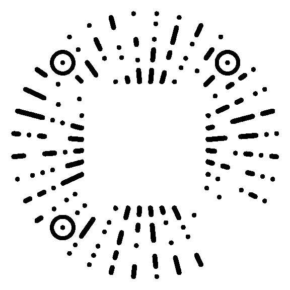

驾驶画面
连接状态
- 游戏遥测
- 正在读取
- 设备输入
- 正在读取
本段驾驶
G峰值与轨迹
目标显示器
桌面参考
参考画面不接收鼠标操作。
组件样式
显示效果
配色与辅助
计算方式
效果对比
扩展组件
正在读取组件…
方向盘
盘面与仪表
正在读取当前盘面…
仪表显示
挡位方向
独立仪表可在布局页移动。
当前画面
按盘面保存。多个按钮用逗号分隔；录入时按下对应按键。
显示与连接
桌面显示
游戏遥测
正在读取
接入说明
iRacing SDK与ACR原生共享内存会自动读取，进入赛道后接收驾驶数据。
F1 25：保留游戏发送给SimHub的现有端口，在SimHub的F1 25设置中增加UDP转发至 127.0.0.1:20778；游戏输出格式选2025，建议60 Hz。保留已有转发目的地。
数据详情
OBS浏览器源
浏览器源独立输出画面，位置在OBS中调整。
编辑布局快捷键
用于进入或完成布局编辑。
正在读取快捷键…
版本与更新
当前版本
正在读取版本…
正在读取更新状态…
发布说明
热更新会刷新画面；完整更新会短暂关闭并重启应用。布局与设置保留，本地算法包停用，文件保留。
本地包
导入本地算法、组件扩展或盘面包，先查看内容再应用。
文件详情
支持开发
支付宝
¥5.98
微信

建议 ¥6